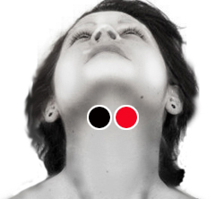

Síndrome de Sjögren
Par
hueso hioides - hueso hioides

Generalidades:
Síndrome de Sjögren: Es un trastorno autoinmunitario en el cual se destruyen las glándulas que producen las lágrimas y la saliva, lo que causa resequedad en la boca y en los ojos. Este trastorno puede afectar a otras partes del cuerpo, incluso los riñones y los pulmones. Se desconoce la causa del síndrome de Sjögren. Es un trastorno autoinmunitario, lo cual significa que el cuerpo ataca por error al tejido sano. El síndrome ocurre con mayor frecuencia en mujeres de 40 a 50 años y es poco frecuente en niños.
El Dr. Goiz ha descubierto que puede ser causado por Parotiditis más otros dos virus asociados.